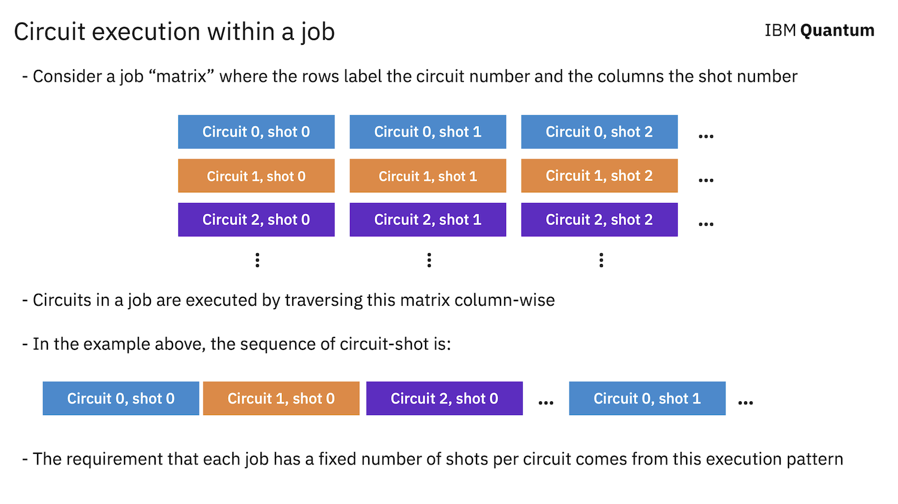
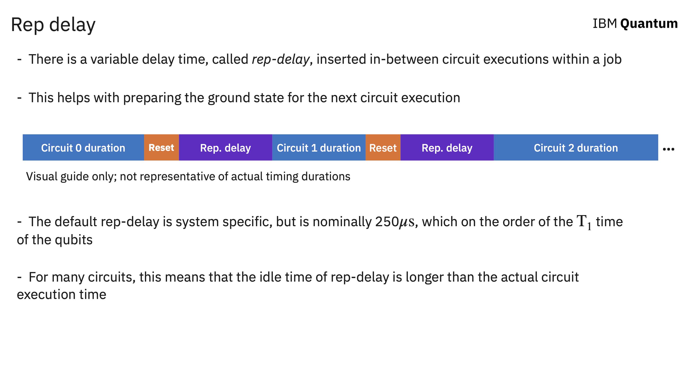

Circuit execution within a job#
Multi-circuit jobs#
IBM Quantum systems allow you to submit multiple circuits within a single job. Attached to each job is a number of shots, that tells the system how many times to sample each circuit. The question then arrises, how are the circuits and shots executed within a muti-circuit job?

This columnwise execution pattern for multi-circuit jobs in the underlying reason why there is a fixed number of shots for each circuit within a job.
Repetition delay#
The above description of circuit execution is a bit simplified. Namely, when a circuit is executed, there are additional operations that are performed after the circuit itself is done executing. First, the qubits need to be reset after measurement. Second, there is an additional repetition delay, or rep-delay for short, that is padded after the reset to help the qubits further relax into the ground state before the next circuit is executed.

The rep-delay for a given quantum system can be found in the calibration data for the device. Here we give an example for querying the default rep_delay for a IBM Quantum backend:
from qiskit import *
from qiskit_ibm_provider import IBMProvider
provider = IBMProvider()
backend = provider.get_backend('ibm_sherbrooke')
backend.configuration().default_rep_delay
0.00025
The above time, in units of seconds, is the default rep-delay used by the system. An user can change this value to any value within the range specified by the device:
backend.configuration().rep_delay_range
[0.0, 0.0005]
Using custom rep_delay#
To set your own rep_delay you can pass the desired value into backend.run() as a keyword argument. E.g.:
qc = QuantumCircuit(2)
qc.h(0)
qc.cx(0,1)
qc.measure_all()
trans_qc = transpile(qc, backend)
job = backend.run(trans_qc, shots=1e4, rep_delay=100e-6)